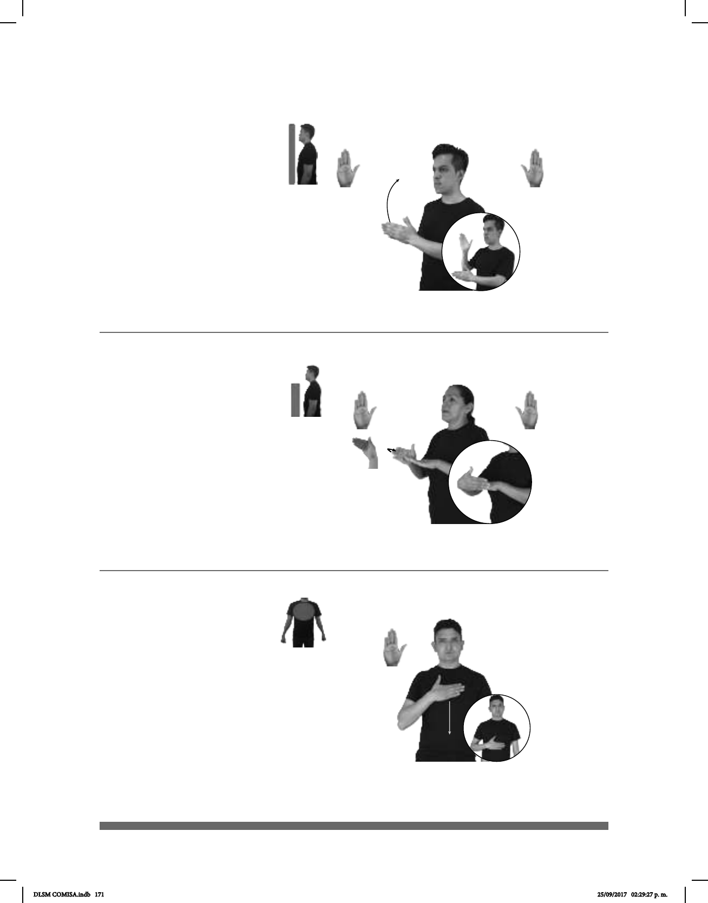

171
(B-P 181)
HOY TEMPRANO pro-YO IR CASA
Hoy me voy temprano a casa.
Seña: SB
MD y MB B-P.2
MD palma hacia la
izquierda. MB palma hacia la
derecha.
MD de MB a la altura
del cuello, MB a la altura del
pecho.
La MD se mueve
formando un arco.
v. intr. Dejar el lugar en
el que estaba para llegar a otro:
alejarse de la persona que habla o
del lugar en el que ella está.
(B-P 182)
JAMAICA PAÍS LUGAR BONITO
Jamaica es un país bonito.
Seña: SB
MD seña que pasa
de B-P.2 a B-P.8, MB B-P.2, B.P.8
MD la palma inicia
hacia la izquierda y termina hacia
adentro. MB palma hacia abajo.
A la altura del pecho.
MD junto a MB.
MD se mueve
formando un arco hacia la
izquierda.
País del Caribe
americano cuya capital es
Kingston.
(B-P 183)
JUSTO PARA TODOS
La justicia es para todos.
Seña: SM
B-P.2
Palma hacia adentro.
Del pecho al abdomen.
Recto.
Cabeza
inclinada hacia enfrente, ceño
fruncido.
adj. Que está o va de
acuerdo con la justicia, que cumple
con ella.
DLSM COMISA.indb 171 25/09/2017 02:29:27 p. m.